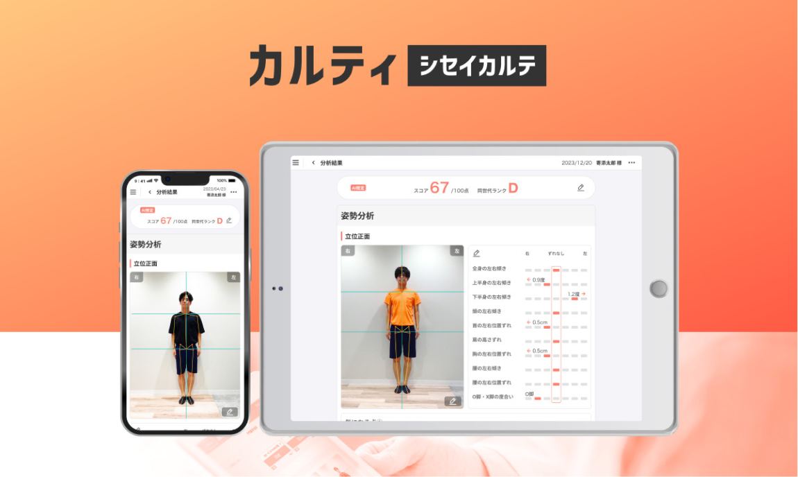
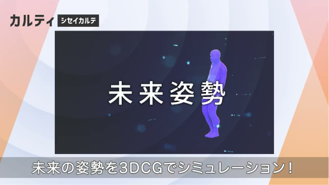
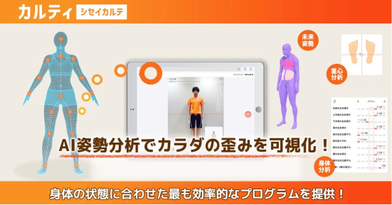
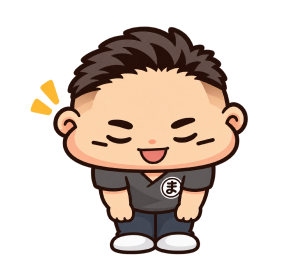
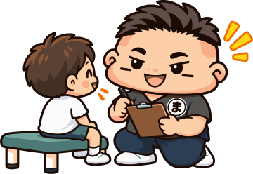
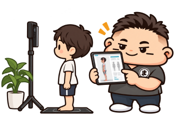
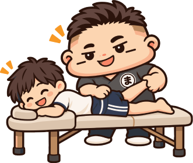
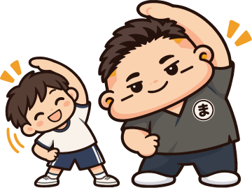

シセイカルテによるAI姿勢分析
専用アプリで姿勢を撮影し、骨格のバランスや歪みを数値で確認します。
 POSTURE ANALYSIS
POSTURE ANALYSIS

これからの姿勢を、今から整える
その姿勢のお悩み、まずは現在の状態を確認してみませんか。
 ABOUT
ABOUT
姿勢や骨格のゆがみ、筋肉の動きを確認しながら、身体の状態を評価します。
お子さまの姿勢は、保護者の方の同意を得たうえで、現在の状態を共有し、日常生活での姿勢や身体の使い方についてもアドバイスします。



 OUR ANALYSIS
OUR ANALYSIS
分析で終わらせず、今の状態をわかりやすくお伝えするところから始めます。
専用アプリで姿勢を撮影し、骨格のバランスや歪みを数値で確認します。
実際の立ち姿や歩き方を確認し、身体の使い方のクセを見つけます。
保護者の方と状態を共有しながら、無理のない範囲で進めていきます。
※分析結果はカウンセリングの中でご説明します。気になる点はお気軽にご質問ください。
 PRICE
PRICE
表示価格はすべて税込です。
 姿勢分析
姿勢分析
 整体＋姿勢分析 40分
整体＋姿勢分析 40分
 整体＋姿勢分析 60分
整体＋姿勢分析 60分
料金や進め方でご不明な点は、カウンセリングの際にお気軽にご確認ください。
 FLOW
FLOW
ご来院からご提案までの流れをご案内します。
STEP 01

ご来院後、受付を行います。ご予約の旨をお伝えください。
STEP 02

お悩みや症状について詳しくお伺いします。
STEP 03

現在のお身体の状態を確認します。
STEP 04

分析結果をご説明します。整体を組み合わせたコースでは、身体の状態に合わせた施術を行います。
STEP 05

分析結果に応じてお家でできるおすすめエクササイズもご紹介。
 FAQ
FAQ
姿勢分析は何歳からでも可能です。当院は小学生前からお子さまの姿勢を見ています。
身体の状態は一人ひとり異なるため、一概の頻度や期間は断定できません。まずは今の状態をご本人・保護者の方に共有し、通い方について一緒に考えていきます。
身体の状態を確認しながら施術を行います。無理のない範囲で対応します。
はい、対応しています。姿勢分析を活用して身体の使い方を確認し、スポーツに活かせるアドバイスをします。


 RESERVE
RESERVE
ご予約はWeb予約が便利です。お急ぎの方はお電話、ご相談はLINEからも承っております。
24時間いつでもご予約いただけます。初めての方もこちらから。
Webで予約（新しいタブで開きます）気になることを気軽に
ご相談いただけます。
お急ぎのご相談は
お電話が便利です。
当院への営業・勧誘を目的としたお電話はご遠慮ください。